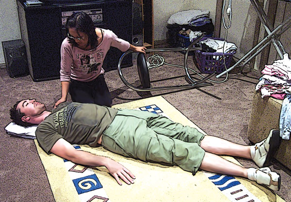

Epilepsy
Epilepsy
Epilepsy is a disruption of brain function that interrupts the normal electrical activity of the brain. Normally, neurons, which are cells that carry electrical impulses, allow communication between the brain and rest of the body. In epileptics, neurons 'fire' or send electrical impulses toward surrounding cells, stimulating neighbouring cells to fire at one time, causing an 'electrical storm' within the brain, which results in physical changes called seizures or 'fits'. It is only when there is a tendency to have recurrent seizures that epilepsy is diagnosed.
In 70 percent of all cases the cause of epilepsy cannot be identified. Head injuries, strokes, brain tumours, infections such as meningitis, lead poisoning or injury during childbirth mostly cause the remaining 30 percent. There are many different types of seizures.
The main types of seizures are:
 Tonic-clonic seizures
Tonic-clonic seizures
 Absence seizures
Absence seizures
 Complex partial seizures
Complex partial seizures
 Simple partial seizures
Simple partial seizures
Convulsive seizures
 Tonic-clonic seizures are convulsive seizures where the body stiffens (tonic phase) followed by general muscle jerking (clonic phase), and involves the whole brain. The person loses consciousness, their body stiffens and limbs jerk. These seizures generally last up to three minutes. After the seizure the person may want to sleep, or they may have a headache or be confused and disoriented. The person may experience an 'aura' which can precede a tonic-clonic seizure,and this may act as a warning giving the person time to seek a safe place before losing consciousness.
Tonic-clonic seizures are convulsive seizures where the body stiffens (tonic phase) followed by general muscle jerking (clonic phase), and involves the whole brain. The person loses consciousness, their body stiffens and limbs jerk. These seizures generally last up to three minutes. After the seizure the person may want to sleep, or they may have a headache or be confused and disoriented. The person may experience an 'aura' which can precede a tonic-clonic seizure,and this may act as a warning giving the person time to seek a safe place before losing consciousness.
Non-convulsive seizures
 An absence seizure causes the person to lose contact with their surroundings for about 30 seconds, with little or no outward sign that anything is wrong.This type of seizure mainly occurs in children and is often mistaken for daydreaming or lack of concentration.
An absence seizure causes the person to lose contact with their surroundings for about 30 seconds, with little or no outward sign that anything is wrong.This type of seizure mainly occurs in children and is often mistaken for daydreaming or lack of concentration.
 A complex partial seizure is accompanied by impaired consciousness and recall. It may also involve staring, automatic behaviour such as lip smacking, chewing, mumbling, walking, grunting, or the repetition of words or phrases. The person may experience an 'aura' which can precede a complex partial seizure.
A complex partial seizure is accompanied by impaired consciousness and recall. It may also involve staring, automatic behaviour such as lip smacking, chewing, mumbling, walking, grunting, or the repetition of words or phrases. The person may experience an 'aura' which can precede a complex partial seizure.
 A simple partial seizure produces a sudden shock-like jolt to one or more muscles which increases muscle tone and causes movement. These sudden jerks are like those that occur in healthy people as they fall asleep.
A simple partial seizure produces a sudden shock-like jolt to one or more muscles which increases muscle tone and causes movement. These sudden jerks are like those that occur in healthy people as they fall asleep.

Care and Treatment
Tonic-Clonic Seizures ('Grand Mal')
 protect from harm
protect from harm
 place something soft under head
place something soft under head

 loosen tight clothing and any tie
loosen tight clothing and any tie
 roll into recovery position when jerking stops, or immediately if vomited
roll into recovery position when jerking stops, or immediately if vomited
 reassure until fully recovered
reassure until fully recovered
 DO NOT put anything in the casualty's mouth
DO NOT put anything in the casualty's mouth
 DO NOT restrain the casualty
DO NOT restrain the casualty
If seizure occurs while the person is seated and strapped in, leave them seated until the seizure is finished. Support their head and neck during the seizure. After the seizure place in the recovery position if unconscious, or if there is food, water or vomit in their mouth.
Absences ('Petit Mal')
 nil active treatment required
nil active treatment required
 reassurance
reassurance
Complex Partial Seizures (Focal)
 protect from harm
protect from harm
 reassure until fully recovered
reassure until fully recovered
 DO NOT restrain unless at risk of injury
DO NOT restrain unless at risk of injury
Simple Partial Seizures
 nil active treatment required
nil active treatment required
 reassurance
reassurance
One problem encountered by the first aid provider is that of the well meaning, but untrained, bystander. This person may insist that the epileptic's tongue should be held before they 'swallow it'.
The bystander should be discouraged from actively pulling the casualty's tongue out, or placing anything in the casualty's mouth.
Most epileptics understand what happened to them, and as soon as they recover sufficiently, they continue on with their business. They do not usually require ambulance care and may become upset when one is called.
However, as the first aid provider, you must satisfy yourself that the person is recovering normally, and that there appear to be no complications.

When to call for an ambulance
 A complex partial seizure lasts longer than 15 minutes
A complex partial seizure lasts longer than 15 minutes
 Another seizure follows quickly
Another seizure follows quickly
 Food or water is in mouth during seizure
Food or water is in mouth during seizure
 It is the first known seizure
It is the first known seizure
 The person has been injured
The person has been injured
 The person has breathing difficulties after the jerking stops
The person has breathing difficulties after the jerking stops
 The person is a diabetic
The person is a diabetic
 The person is pregnant and has a convulsive seizure
The person is pregnant and has a convulsive seizure
 The seizure has occurred in water
The seizure has occurred in water
 The seizure lasts longer than 5 minutes
The seizure lasts longer than 5 minutes
 The seizure lasts longer than normal for that person
The seizure lasts longer than normal for that person
 You are in any doubt
You are in any doubt
 You arrive after the seizure has started
You arrive after the seizure has started
Useful Resource
Epilepsy Association
 1300 366 162
1300 366 162
http://www.epilepsy.com.au